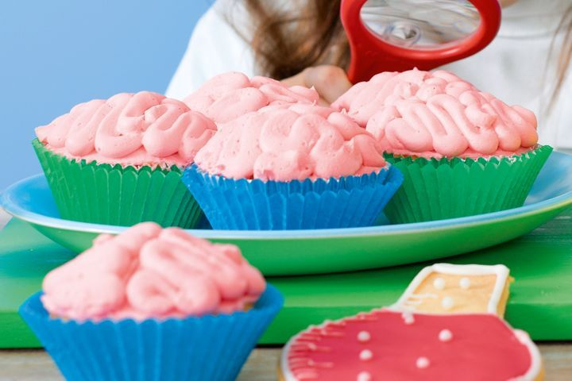

Brain Cakes

Description
These spongy brain cakes are equal parts spooky and delicious!
Ingredients
Cup Cakes
- 125g Butter, Softened
- 1 Teaspoon Vanilla Extract
- 3/4 Cup Caster Sugar
- 1 1/2 Cups Self-Raising Flour, Sifted
- 1/2 Cup Milk
Pink Icing
- 250g Butter, Softened
- 3 Cups Icing Sugar Mixture
- 2 Tablespoon Milk
- Pink Gel Food Coloring
Steps
- Preheat oven to 180C/160C fan-forced. Line a 12-hole, 1/3 cup-capacity muffin pan with paper cases.
- Using an electric mixer, beat butter, vanilla and sugar until light and fluffy. Add eggs, 1 at a time, beating after each addition. Add flour and milk. Stir to combine.
- Spoon 1/4 cup mixture into each paper case. Bake for 25 minutes or until a skewer inserted in the centre of 1 cake comes out clean. Stand cakes in pan for 2 minutes. Transfer to a wire rack to cool.
- Make Pink icing: Using an electric mixer, beat butter until pale and fluffy. Gradually add icing sugar mixture and milk, beating constantly until combined. Tint pale pink using pink food colouring.
- Spread cakes with icing to form a mound. Using a butter knife, mark a line through the icing, in the middle of each cake. Spoon remaining icing into a piping bag fitted with a 8mm round nozzle. Using the picture as a guide, pipe icing onto each cake to form brains.
Home